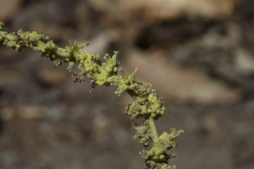
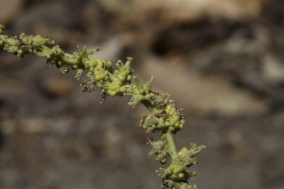

Trees 12 m tall.
12 ಮೀ. ಎತ್ತರದವರೆಗೆ ಬೆಳೆಯುವ ಮರಗಳು.
12 മീറ്റര് ഉയരമുള്ള മരങ്ങള്.
மரங்கள் 12 மீ. உயரம் வரை வளரக்கூடியது
Branchlets subterete, stellately pubescent when young.
ಕಿರುಕೊಂಬೆಗಳು ಉಪ-ದುಂಡಾಗಿದ್ದು ಎಳೆಯದಾಗಿದ್ದಾಗ ನಕ್ಷತ್ರ-ಮೃದುತುಪ್ಪಳದಿಂದ ಕೂಡಿರುತ್ತದೆ.
ഇളതായിരിക്കുമ്പോള്, നക്ഷത്രാകാര രോമിലമായ, ഏതാണ്ട് ഉരുണ്ടിരിക്കുന്ന ഉപശാഖകള്.
சிறிய நுனிக்கிளைகள் குறுக்குவெட்டுத் தோற்றத்தில் வளையமானது, புதியகுறுத்து நட்சத்திர வடிவ உரோமங்களுடையது.
Leaves simple, alternate, spiral; stipule ovate-lanceolate, stellately pubescent, caducous; petiole 0.7-5 cm long, canaliculate, swollen at apex and base; lamina 6.5-17.5 x 3.3-8.5 cm, usually elliptic, apex acute, base acute, margin entire, subcoriaceous, stellately pubescent when young; midrib slightly raised above; secondary_nerves 5-7 pairs prominently raised beneath; tertiary_nerves distantly percurrent.
ಎಲೆಗಳು ಸರಳವಾಗಿದ್ದು ಪರ್ಯಾಯ ಮತ್ತು ಸುತ್ತು ಜೋಡನಾ ವ್ಯವಸ್ಥೆಯಲ್ಲಿರುತ್ತವೆ; ಕಾವಿನೆಲೆಗಳು ಅಂಡ-ಭರ್ಜಿಯ ಆಕಾರ ಹೊಂದಿರುತ್ತವೆ ಮತ್ತು ನಕ್ಷತ್ರ- ಮೃದುತುಪ್ಪಳದಿಂದ ಕೂಡಿರುತ್ತದೆ ಹಾಗೂ ಉದುರಿ ಹೋಗುವ ರೀತಿಯವುಗಳಾಗಿರುತ್ತವೆ. ತೊಟ್ಟುಗಳು ಅಂದಾಜು 0.7 – 5 ಸೆಂ.ಮೀ.ಉದ್ದವಿದ್ದು ಕಾಲುವೆಗೆರೆ ಸಮೇತವಾಗಿರುತ್ತವೆ ಹಾಗೂ ತುದಿ ಮತ್ತು ಬುಡದಲ್ಲಿ ಊದಿಕೊಂಡಿರುತ್ತವೆ;ಪತ್ರಗಳು 6.5 -17.5 X 3.3 – 8.5 ಸೆಂ. ಮೀ. ಗಾತ್ರ, ಸಾಮಾನ್ಯವಾಗಿ ಅಂಡವೃತ್ತದ ಆಕಾರ ಹೊಂದಿರುತ್ತವೆ; ಪತ್ರಗಳ ತುದಿ ಮತ್ತು ಬುಡ ಚೂಪಾಗಿರುತ್ತವೆ;ಅಂಚು ನಯವಾಗಿರುತ್ತದೆ;ಮೇಲ್ಮೈ ಉಪ-ತೊಗಲನ್ನೋಲುವ ಮಾದರಿಯಲ್ಲಿದ್ದು ಎಳೆಯದಾಗಿದ್ದಾಗ ನಕ್ಷತ್ರ- ಮೃದುತುಪ್ಪಳದಿಂದ ಕೂಡಿರುತ್ತದೆ. ಮಧ್ಯನಾಳ ಪತ್ರದ ಮೇಲ್ಭಾಗದಲ್ಲಿ ಸ್ವಲ್ಪಮಟ್ಟಿಗೆ ಉಬ್ಬಿಕೊಂಡಿರುತ್ತದೆ; ಎರಡನೇ ದರ್ಜೆಯ ನಾಳಗಳು 5 ರಿಂದ 7 ಜೋಡಿಗಳಿದ್ದು ತಳಭಾಗದಲ್ಲಿ ಪ್ರಮುಖವಾಗಿ ಮೇಲೆದ್ದಿರುತ್ತವೆ; ಮೂರನೇ ದರ್ಜೆಯ ನಾಳಗಳು ಅಂತರ ಹೊಂದಿದ್ದು ಎಲೆ ದಿಂಡಿಗೆ ಅಡ್ಡವಾಗಿ ಕೂಡುವಂತವು.
ലഘുവായ ഇലകള്, ഏകാന്തര ക്രമത്തില്, സര്പ്പിളമായി അടുക്കിയിരിക്കുന്നു; എളുപ്പം കൊഴിഞ്ഞ് വീഴുന്ന, നക്ഷത്രാകാര രോമിലമായ, അണ്ഡാകാര-കുന്താകാര അനുപര്ണ്ണങ്ങള്; രണ്ടറ്റവും വീര്ത്ത, ചാലുള്ള, 0.7 സെ.മീ. മുതല് 5 സെ.മീ. വരെ നീളമുള്ള ഇലഞട്ട്; പത്രഫലകത്തിന് 6.5 സെ.മീ. മുതല് 17.5 സെ.മീ വരെ നീളവും 3.8 സെ.മീ. മുതല് 8.5 സെ.മീ. വരെ വീതിയും, സാധാരണയായി ദീര്ഘവൃത്താകൃതിയുമാണ്; പത്രാഗ്രം നിശിതമാണ്, പത്രാധാരവും നിശിതമാണ്, അരികുകള് അവിഭജിതം, ഉപചര്മ്മില പ്രകൃതം, ഇളതായിരിക്കുമ്പോള് നക്ഷത്രാകാര രോമിലമാണ്; മുഖ്യസിര മുകളില് അല്പ്പം ഉയര്ന്നതാണ്; കീഴെ നന്നായി ഉയര്ന്നു നില്ക്കുന്ന 5 മുതല് 7 വരെ ജോഡി ദ്വിതീയ ഞരമ്പുകള്; വിദൂര-പെര്കറന്റ് വിധത്തിലുള്ള ത്രിതീയ ഞരമ്പുകള്.
இலைகள் தனித்தவை, மாற்றுஅடுக்கமானவை, சுழல் போல் அமைந்தவை; இலையடிச்செதில் முட்டை-ஈட்டி வடிவானது, நட்சத்திர வடிவ உரோமங்களுடையது, எளிதில் உதிரக்கூடியவை; இலைக்காம்பு 0.7-5 செ.மீ. நீளமானது, குறுக்குவெட்டுத் தோற்றத்தில் கேனாலிகுலேட், இருமுனைகளும் உப்பியவை; இலை அலகு 6.5-17.5 X 3.3-8.5 செ.மீ., பொதுவாக நீள்வட்ட வடிவானது, அலகின் நுனி கூரியது, அலகின் தளம் கூரியது, விளிம்பு முழுமையானது, சப்கோரியேசியஸ், இளம் பருவத்தில் நட்சத்திர வடிவ உரோமங்களுடையது; மையநரம்பு அலகின் மேற்பரப்பைவிட உயர்ந்தது; இரண்டாம் நிலை நரம்புகள் 5-7 ஜோடிகள், அலகின் பரப்பைவிட மேல் எழும்பியது; மூன்றாம் நிலை நரம்புகள் அகன்ற பெர்க்கரண்ட்.
Flower unisexual, monoecious; inflorescence terminal racemes; male flowers numerous in clusters and female few at the base of the inflorescence.
ಹೂಗಳು ಏಕಲಿಂಗಿಗಳಾಗಿರುತ್ತವೆ;ಗಂಡು ಮತ್ತು ಹೆಣ್ಣು ಹೂಗಳು ಒಂದೇ ಸಸ್ಯದಲ್ಲಿರುತ್ತವೆ;ಪುಷ್ಪಮಂಜರಿಗಳು ತುದಿಯಲ್ಲಿರುವ ಮಧ್ಯಾಭಿಸರ ಮಾದರಿಯವು;ಗಂಡು ಹೂಗಳು ಹೆಚ್ಚಿನ ಸಂಖ್ಯೆಯಲ್ಲಿದ್ದು ಗುಚ್ಛಗಳಲ್ಲಿರುತ್ತವೆ ಮತ್ತು ಹೆಣ್ಣು ಹೂಗಳು ಕೆಲವು ಇದ್ದು ಪುಷ್ಪಮಂಜರಿಯ ಬುಡದಲ್ಲಿ ಇರುತ್ತವೆ.
പൂക്കള് ഏകലിംഗികളാണ്, മൊണീഷ്യസും; പൂങ്കുലകള് ഉച്ഛസ്ഥ റസീമുകളാണ്; ആണ് പൂക്കള് ധാരാളമായി കൂട്ടങ്ങളിലുണ്ടാകുന്നു; പെണ് പൂക്കള് കുറച്ചെണ്ണം മാത്രമായി പൂങ്കുലയുടെ കീഴ്ഭാഗത്തായി ഉണ്ടാകുന്നു.
மலர்கள் ஓர்பாலானவை; ஓரகம் கொண்டவை; மஞ்சரி தண்டின் நுனியில் காணப்படும் ரெசீம்; ஆண்மலர்கள் எண்ணற்றவை, கூட்டமாக காணப்படும் மற்றும் பெண்மலர்கள் குறைந்த எண்ணிக்கையில் மஞ்சரியின் தளத்தில் காணப்படுபவை.
Capsule subglobose, scabrous; seeds 3, globose.
ಡ್ರೂಪ್ಗಳು ಉಪಗೋಳಾಕಾರದಲ್ಲಿದ್ದು ಒರಟಾದ ಮೇಲ್ಮೈ ಹೊಂದಿದ್ದು 3 ಗೋಳಾಕಾರದ ಬೀಜಗಳನ್ನು ಒಳಗೊಂಡಿರುತ್ತವೆ.
3 വീതം ഗോളാകാര വിത്തുകളുള്ള, കായ, ധാരാളം ചെറുമുഴപ്പുകളാല് പരുക്കനായ ഉപഗോളാകാര കാപ്സ്യൂള് ആണ്.
வெடிகனி (கேப்சூல்), கோளவடிவானது, சொரசொரப்பானது; விதைகள் 3, கோளவடிவானது.


 
